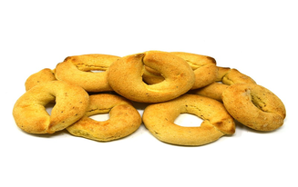

Sopa Paraguaya
Pastel Mandio
Chipa Tradicional
Contacto
CHIPA TRADICIONAL

INGREDIENTES
800g de Almidon
250g de Manteca
350g de Queso (Muzzarella, dambo, Paraguay y sardo)
3 Huevos
1 Taza de Leche
1 Cucharada de Aniz y de Sal
En el siguiente video vas a poder ver toda la preparacion de la Chipa Tradicional
-->